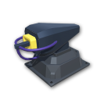
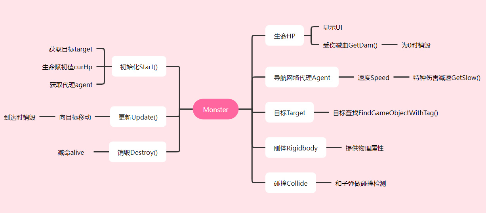

概述 Overview
- 1. 项目欣赏
- WebGL Windows Android
- 2. 项目需求
- . 开局3条命lives、500金币
- . 选择炮塔，放在合适的位置，狙击敌人
- . 成功消灭敌人，可以得到对应的金币奖励
- . 未被消灭的敌人达到终点后，将损失1条命
- . 创建炮塔需要消耗一定数量的金币
- . 每种炮塔都有自己的攻击属性
- 3. 开发技能
-
项目 Project 视图 View 游戏对象 GameObject 刚体 Rigidbody 组件 Component 碰撞 Collide 预制件 Prefab 材质 Material 脚本 Script 资源商店 Asset Store 调试 Debug 音频 Audio 包 Package 发布 Publish 导航 Navigation 用户界面 Toggle 物理 Physical 线渲染 Line Renderer 协程 Coroutine 数据脚本 Data - 4. 资源素材
- . 项目完整资源包：
- . 炮塔建模素材：
- . 音频素材：普通子弹 、火箭炮 、激光炮 、销毁
- . 字体素材：Cruiser Fortress Bevel 、禹为 、微软雅黑
- . 图片素材：另存为保存
- 
- . 更多资源：Unity资源商店、精灵网sprite resource
- 5. 思路
- 让怪物 动 起来
- 让炮塔 建 起来
- 让它们 打 起来
- [Section End]
主场景 Scenes
- 项目 Project
- 1. 创建3D项目
- 2. 调整游戏分辨率为16:9
- 3. 创建其它常用的文件夹
- 4. 修改当前场景为 main[若无说明，以下操作均位于当前场景]
- 地图 Map
- 1. 使用 Cube；建议生成预制件，通过复制，快速布局
- 2. 也可以使用平面 PLane代替；以掌握开发方法为主
- 道路 Path
- 标记怪物的移动路线
- 1. 创建若干 Cube，根据设计拼接出道路的形状；道路宽带应大于2倍的导航代理半径Agent Radium
- 2. 创建导航 Navigation：Window→AI→Navigation
- 3. 指定道路为静态 Static、可行走 Walkable
- 4. 烘焙 Bake后自动生成导航网络

- 基座 Base
- 用来放置炮塔
- . 鼠标移入移出会有颜色变化，提醒用户可以操作；后续加入UI时，当鼠标不在UI上，才触发鼠标效果；不是必须功能
- . 如果当前没有炮塔，则创建
- . 如果当前已有炮塔，则删除或升级[预留功能]
- 1. 创建Cube作为基座Base，reset[主要取其位置中心]，添加材质；调整合适大小
- 2. 创建新层base，将基座Base放置于base层，投射的射线仅仅和该层做碰撞检测
- 3. 创建脚本Base.cs并挂载；最后生成预制件
- 4. 通过复制基座Base，沿着道路拼接成一定形状
-
using System.Collections; using System.Collections.Generic; using UnityEngine; using UnityEngine.EventSystems;//引入事件系统 public class Base : MonoBehaviour { MeshRenderer m_Renderer; Color init_Color; public Color hover_Color; void Start() { m_Renderer = GetComponent<MeshRenderer>(); init_Color = m_Renderer.material.color; } private void OnMouseEnter() { if (!EventSystem.current.IsPointerOverGameObject())//增加判断：不在UI上 { m_Renderer.material.color = hover_Color; } } private void OnMouseExit() { m_Renderer.material.color = init_Color; } } - 起点 Start
- . 怪物孵化的位置
- . 使用Cube或空游戏对象
- . 非必须，也可以将后续的怪物孵化器对象Spawn当作起点
- 终点 End
- . 怪物移动的终点
- . 使用Cube或空游戏对象，添加并指定标签target便于动态创建的怪物获取；如果使用空对象，可以指定3D icon以便直观显示
- . 怪物移动到终点时，玩家会受到减命lives的惩罚；lives为0时，游戏结束
- 快速布局 Increment Snapping
- 预制件Prefab：创建、打散unpack
- 3D图标：3D icon
- 鼠标事件：OnMouseEnter、OnMouseExit
- 渲染器组件 Renderer：换肤
- [Section End]

怪物 Monster
- 怪物设计
- 
- 先创建一个怪物，生成预制件；最后通过复制和修改，完成其它怪物预制件的创建
- 1. 使用Sphere创建第一种怪物Mon0，默认大小1*1*1，指定材质，放置在起点Start位置
- 2. 选择怪物Mon0，创建画布，设为世界模式World Space；调整画布大小为1*0.2；位置高于怪物一定距离
- 3. 创建1个图像Image作为血槽背景hpBg；调整大小为全覆盖；颜色为白色，透明
- 4. 在血槽背景hpBg里再创建1个图像Image作为血槽hpBar；调整大小为全覆盖；材质选择金色素材；水平向右填充；拖动填充数量Fill Amount，查看素材的填充情况；血槽初始是满的/填充为1，收到伤害后会逐步减少，直到为0/死亡
- 5. 将Mon0生成预制件；复制并修改：材质Material、贴图Texture、代理的速度Speed等，完成其它几种怪物的创建；创建过程和怪物预制件结构如下图：
- 单个怪物的移动
- 为怪物指定导航网络代理，高度相同，统一调整为1，速度不同
- 1. 选中其中一个怪物，添加导航网络代理组件：Navigation→Nav Mesh Agent，高度调整为1，速度为3.5，其它使用默认参数
- 3. 创建怪物脚本Mon.cs，控制怪物从起点向终点移动；达到终点后销毁怪物；如果怪物成功达到终点，玩家生命减1
- 4. 指定相应的血量和对应的血槽，更新怪物预制件
- 5. 为其它几种怪物挂载脚本，指定相应的属性并更新预制件
- 6. 运行游戏，测试几种怪物的移动情况
-
using System.Collections; using System.Collections.Generic; using UnityEngine; using UnityEngine.AI; using UnityEngine.UI; public class Mon : MonoBehaviour { public GameObject explosion; public float Hp; public Image HpBar; NavMeshAgent agent; Transform tar; float curHealth; float oriSpeed; void Start() { curHealth = Hp; agent = GetComponent<NavMeshAgent>(); tar = GameObject.FindGameObjectWithTag("target").transform; oriSpeed = agent.speed; } void Update() { agent.SetDestination(tar.position); //请根据实际情况判断距离 if (Vector3.Distance(agent.destination, agent.nextPosition) <= 0.5f) { Destroy(gameObject);//1 //每成功达到终点1个怪物，玩家生命减1；来自脚本GameManager.cs GameManager.lives--; } } //供子弹脚本的碰撞处理使用 public void GetDam(float dam) { curHealth -= dam; HpBar.fillAmount = curHealth / Hp; if (curHealth <= 0) { Destroy(gameObject);//2 //播放死亡时的粒子特效，参见后面[提高]部分 GameObject exp = Instantiate(explosion); Destroy(exp, 1); } } //后期预留减速功能 public void getSlow(float factor) { agent.speed = oriSpeed * (1 - factor); StartCoroutine(clearSlow()); } public void resetSlow() { agent.speed = oriSpeed; } IEnumerator clearSlow() { yield return new WaitForSeconds(2); resetSlow(); } //业务整合或单独写在对象销毁所在的函数内1、2 private void OnDestroy() { Spawn.alive--; } } - [ 获取对象]
- Object.FindObjectOfType
- . Returns the first active loaded object of Type type.
- . this function is very slow...
- GameObject.Find
- . Finds a GameObject by name and returns it.
- . it is recommended to not use this function every frame.
- GameObject.FindWithTag
- . Returns one active GameObject tagged tag.
- . returns the first GameObject.
- . 注意：版本之间的函数差异：FindGameObjectWithTag
- 怪物孵化
- 创建怪物数据，据此孵化若干波不同类型的怪物；如果当前波的怪物没有被消灭，即alive>0，则延迟下一波怪物的生成
- 1.创建怪物数据文件Data.cs，指定怪物种类monPrefab、数量monNum和每个怪物生成的时间间隔monInter；该文件仅仅提供数据，需要序列化类System.Serializable；但不需要继承默认的MonoBehaviour类
-
using System.Collections; using System.Collections.Generic; using UnityEngine; [System.Serializable] public class Data { public GameObject monPrefab; public int monNum; public int monInter; } - 2. 创建空游戏对象作为怪物孵化器Spawn，调整至起点Start位置
- 3. 创建孵化脚本Spawn.cs并挂载，采用 协程，按照指定的参数孵化多波怪物；
- . 引入怪物数据文件Data
- . 指定孵化起点startPos[移动终点由怪物自己获取]
- . 指定每波怪物生成的时间间隔waveInter
- . 创建静态的怪物个数alive，便于其它脚本共享
- . 创建静态布尔变量isDone，用来表示怪物创建状态，配合后期游戏管理GameManager.cs中的lives，进行胜利判断
-
//Spawn.cs using System.Collections; using System.Collections.Generic; using UnityEngine; public class Spawn : MonoBehaviour { public Data[] mons; public float waveInter; public static int alive = 0; public static bool isDone=false; void Start() { isDone = false; StartCoroutine(MonSpawn()); } IEnumerator MonSpawn() { for (int i = 0; i < mons.Length; i++) { for (int j = 0; j < mons[i].monNum; j++) { alive++; GameObject mon = Instantiate(mons[i].monPrefab, transform.position, Quaternion.identity); yield return new WaitForSeconds(mons[i].monInter); } while (alive > 0) { yield return null; } yield return new WaitForSeconds(waveInter); } isDone=true; } } - 4. 为孵化脚本指定各个参数，运行游戏，测试怪物孵化情况
- 如何显示当前怪物波数和数量?
- 使用UI，在Spawn的Update中更新
- 人工智能包 UnityEngine.AI
- 导航 Navigation
- 销毁 Destroy
- 销毁 OnDestroy
- 用户界面 UI
- 材质类型 Image Type
- 向量运算 Distance
- 协程 Coroutine
- [Section End]
炮塔 Tower
- 根据提供的素材，分别调整三种炮塔，主要是调整炮的底部位置，旋转位置和朝向；然后创建炮塔商店UI，用户可以选择不同的炮塔，放置于基座上，完成对怪物的击杀
- 第1部分 炮塔调整
- 打散->调整中心->指定材质->调整朝向->创建发射点[->添加刚体]->添加碰撞->生成预制件；炮塔最终结构和效果如下图
- 两个碰撞
- . 炮塔利用碰撞检测敌人
- . 子弹利用碰撞攻击敌人
- . 碰撞的条件]双方都有碰撞组件且一方有刚体组件；所以：可以给敌人加上刚体；也可以给炮塔、子弹加上刚体
- 1. 标准炮 Standard
- 1.1. 打散：拖动标准炮模型到场景并打散，改名为Standard；如果模型过大，请调整其缩放因子Scale Factor并应用Apply，以不超过base尺寸为宜

- 1.2. 调整中心：观察后发现：炮塔主要分为炮台Turret和底座Turret.0012部分；整体炮塔位于地面以下，且旋转炮台时并没有围绕炮台中心；因为后期炮塔要放在base上，所有要调整炮塔的中心和base保持一致。选择移动工具，同时选中炮台Turret和底座Turret.0012，上下调整位置和地图base中心大概相同；为便于操作，可灵活调整导航器视图
- 1.3. 指定材质：利用素材提供的材质调整炮塔；将材质拖动到炮塔的各个部分，选择一个满意的效果；可参照提供的Icon图标进行调整
- 1.4. 调整朝向：新建一个空对象head，先Y轴旋转-90°和炮管方向保持一致；将炮台Turret拖入，作为其子对象；再还原head的Y轴旋转为0；底座的位置和朝向也是偏的，因为攻击时底座不动，所以无需调整
- 1.5. 创建发射点：在炮台Turret里创建空游戏对象firePos，调整至炮口位置，作为子弹发射的参考位置
- 1.6. 为炮塔添加刚体Rigidbody组件，取消使用重力；仅仅使用其作为碰撞的条件
- 1.7. 为炮塔添加球形Sphere碰撞组件，采用触发碰撞检测；调整碰撞中心位于炮塔底部，并根据设计适当调整碰撞区域至能覆盖住一定范围
- 1.8. 生成预制件
- 2. 火箭炮 Missile：调整过程同标准炮；需要说明的是：打散Unpack后，将导弹头生先临时生成为预制件，然后从火箭炮中删除，等待后面[子弹部分]再进一步处理
- 3. 激光炮 Laser：调整过程同标准炮
- 第2部分 炮塔商店
- 利用Toggle组件的单选功能实现炮塔的选择
- 1. 创建画布storeCanvas，调整尺寸为跟随屏幕，设置为1280*720；扩展Expand匹配
- 2. 创建空游戏对象store，高度150，定位于底部；增加布局组件Grid Layout Group、多选一组件Toggle Group；内部对象高度为100，保证其距离底部有一定距离，便于用户操作；
- 3. 创建1个Toggle，指定其组Group属性来源为store；分别设置：
- . Background：尺寸铺满，贴图选择素材提供的标准炮
- . CheckMark：尺寸铺满；贴图选择系统自带的白色Knob，适当降低透明度
- . Label：尺寸铺满；字体大小30，白色；底部居中；文字为创建花费金币数量
- 4. 通过复制、修改，完成其它2个Toggle的创建，分别对应火箭炮和激光炮；静态效果如下图
- 5. 补充设计：怪物波数和数量的UI
- 第3部分 炮塔放置
- 方案1：利用射线和指定层检测：利用鼠标点击和base所在层进行 射线检测Rayast 放置炮塔；
- 0. 确保基座base位于指定层base[前期创建时已指定]
- 1. 创建空游戏对象GameManager作为游戏的全局管理对象
- 2. 创建放置脚本Build.cs并挂载到GameManager对象，主要完成：
- . 塔的选择
- . 塔的放置；生成炮塔时，请根据实际情况调整位置；也可以增加一个位置偏移进行补偿，如new Vector3(0, 1, 0)
-
using System.Collections; using System.Collections.Generic; using UnityEngine; using UnityEngine.EventSystems;//引入UI事件系统 public class Build : MonoBehaviour { public GameObject standard, missile, laser; GameObject selected; void Start() { selected = standard; } void Update() { //按下鼠标且不在UI上 if (Input.GetMouseButtonDown(0) && !EventSystem.current.IsPointerOverGameObject()) { Ray ray = Camera.main.ScreenPointToRay(Input.mousePosition); RaycastHit hit; //和指定层发射碰撞 //如果不指定距离，会放到路面上!!! if (Physics.Raycast(ray, out hit, 1000, LayerMask.GetMask("base"))) { GameObject obj = hit.collider.gameObject; //如果当前对象没有炮塔/子对象；且金钱足够[功能预留] if (obj.transform.childCount == 0) { //动态生成并放置炮塔，成为基座base的子对象 GameObject tower = Instantiate(selected, obj.transform.position, Quaternion.identity); tower.transform.parent = obj.transform; } } } } public void selTowerStandard(bool isON)//选中第1种炮：标准炮 { if (isON) { selected = standard; } } public void selTowerMissile(bool isON)//选中第2种炮：火箭炮 { if (isON) { selected = missile; } } public void selTowerLaser(bool isON)//选中第3种炮：激光炮 { if (isON) { selected = laser; } } } - 3. 为商店画布的3个Toggle分别指定改变事件：选择对应的炮塔
- 4. 运行游戏，查看炮塔的选择和放置效果；金钱消耗：预留功能，请自行完成
- [放置无效]画布Canvas中，如果有铺满的UI，要取消Raycast Target复选框，使其不要成为射线投射的目标；请尽量使用空游戏对象作为容器
- [炮塔悬空]调整炮塔预制件或调整场景中base的位置坐标
- [脚本对象]炮塔放置脚本Build.cs也可以直接挂在UI中的商店对象store
- 方案2：利用射线和指定标签检测：容易被其它碰撞体阻挡导致检测失败；核心代码如下
-
Ray ray = Camera.main.ScreenPointToRay(Input.mousePosition); RaycastHit hit; if (Physics.Raycast(ray, out hit)) { GameObject obj = hit.collider.gameObject; if (obj.tag == "base" && obj.transform.childCount == 0) { GameObject tar = Instantiate(curTower, obj.transform.position, Quaternion.identity); tar.transform.parent = obj.transform; } } - 方案3：利用base鼠标移入事件检测：不利于分配Toggle事件；核心代码如下
-
using System.Collections; using System.Collections.Generic; using UnityEngine; using UnityEngine.EventSystems; public class Base : MonoBehaviour { public GameObject towerFab; private void OnMouseDown() { if (transform.childCount == 0 && !EventSystem.current.IsPointerOverGameObject()) { GameObject obj = Instantiate(towerFab, transform.position, Quaternion.identity); obj.transform.parent = transform; } } } - 射线检测 Raycast
- 布局组件 Grid Layout Group
- 多选一组件 Toggle Group
- 鼠标事件 OnMouseDown
- [Section End]

攻击 Attack
- 开发要点
- . 标准炮使用攻击脚本Standard.cs和Sphere自定义子弹
- . 火箭炮使用攻击脚本Standard.cs和资源提供的导弹
- . 激光炮使用光线组件创建激光武器使用专门的攻击脚本Laser.cs
- . 根据触发碰撞检测获取到怪物，并定时更新
- . 攻击时，锁定目标为距离炮塔最近的怪物[也可以只攻击第一个怪物]
- . 根据设计自行调整炮塔的攻击属性，如攻击间隔、伤害等
- 两个朝向
- 1. 炮塔的炮台朝向目标
- 2. 子弹朝向目标
- 两个阶段
- 阶段1. 一击必杀
- 阶段2. 减血伤害
- 标准炮
- 1. 使用Sphere创建子弹Bullet，调整大小至合适；指定材质
- 2. 添加刚体组件Rigidbody，取消使用重力；使用刚体也是为了满足和敌人产生碰撞的条件
- 3. 采用触发碰撞；检测依据是怪物标签；使用普通碰撞会把敌人击退
- 4. 创建子弹脚本Bullet.cs并挂载到子弹
- . 子弹飞行速度；结合怪物移动深度指定，通常要远大于移动怪物深度
- . 获取攻击目标[由炮塔获取最近的怪物]
- . 检测到触发碰撞，减血/销毁敌人，同时销毁子弹
- . 如果一定时间后没有碰撞到怪物，则子弹自动销毁
- . 如果子弹已经发射出去，但是在碰撞到怪物前，已经被其它子弹消灭，则销毁自己；即：目标为空时，销毁子弹
-
using System.Collections; using System.Collections.Generic; using UnityEngine; public class Bullet : MonoBehaviour { public float damage = 10; public float speed = 20; Transform target = null; void Update() { if (target == null) { Destroy(gameObject); return; } transform.Translate(Vector3.forward * speed * Time.deltaTime); transform.LookAt(target.position); } public void SetTarget(Transform tar) { target = tar; } private void OnTriggerEnter(Collider other) { if (other.tag == "mon") { Destroy(gameObject); target.GetComponent<Mon>().GetDam(damage); //预留：粒子击中特效 } } } - 5. 为标准炮创建脚本Standard.cs并挂载
- . 采用列表List保存获取怪物对象
- . 获取攻击目标：采用触发碰撞检测获取，并重复执行
- . 旋转位置：跟随攻击目标旋转；且避免炮台后仰
- . 发射/开火时间：倒计时实现
- . 发射子弹：对标准炮来说，是自定义子弹；对火箭炮来说，是导弹
- . 开火位置：跟随炮管
-
using System.Collections; using System.Collections.Generic; using UnityEngine; public class Standard : MonoBehaviour { public List<GameObject> list = new List<GameObject>(); public GameObject bullet; public Transform firePos; public Transform headRot; Transform target;//也可以声明为GameObj，但是我们仅仅需要的是一个位置 public float attackInter = 1f; float timer = 0; private void Start() { InvokeRepeating("GetTarget", 0, 0.5f); } void Update() { if (target == null) { return; } //创建新的位置信息，主要是控制高度一致，避免后仰前俯；且让炮台始终朝向目标 Vector3 tarPos = target.position; tarPos.y = headRot.position.y; headRot.LookAt(tarPos); timer += Time.deltaTime; if (timer >= attackInter && list.Count > 0) { GameObject bulletObj = Instantiate(bullet, firePos.position, firePos.rotation); bulletObj.GetComponent<Bullet>().SetTarget(target); Destroy(bulletObj.gameObject, 5); timer = 0; } } void GetTarget() { float minDis = Mathf.Infinity; //起始必须赋空值 Transform nearMon = null; //MUST：每次获取前先把可能的空对象移出 list.RemoveAll(item => item == null); foreach (GameObject item in list) { float dis = Vector3.Distance(transform.position, item.transform.position); if (dis < minDis) { minDis = dis; nearMon = item.transform; } } target = nearMon; } private void OnTriggerEnter(Collider other) { if (other.tag == "mon") { list.Add(other.gameObject); } } private void OnTriggerExit(Collider other) { if (other.tag == "mon") { list.Remove(other.gameObject); } } } - 6. 运行游戏，测试攻击效果并更新标准炮预制件
- 火箭炮
- 素材提供的火箭炮导弹模型朝向不是前方，需要重新调整
- 1. 拖一个导弹预制件到场景并打散Unpack；删除导弹原来的预制件
- 2. 创建一个空游戏对象MissileBullet，先旋转使得Z轴方向和导弹一致，再将导弹拖入；最后还原空对象旋转；[注意：导弹头缩放是100]
- 3. 为游戏对象MissileBullet添加刚体组件Rigidbody，取消使用重力
- 4. 为游戏对象MissileBullet添加胶囊碰撞组件，采用触发碰撞；检测依据是怪物标签
- 5. 为游戏对象MissileBullet挂载子弹脚本Bullet.cs，指定不同的速度speed和伤害damage
- 6. 将游戏对象MissileBullet生成预制件
- 7. 为火箭炮挂载攻击脚本Standard.cs，指定各个参数
- 8. 更新各个预制件，运行游戏，测试攻击效果
- 激光炮
- 线渲染器Line Renderer：
- . 根据两个或多个顶点Vertex，在每个顶点之间绘制一条直线
- . 通常以数组[]的形式提供点的集合
- . 可以做为对象使用：GameObject→Effects→Line；也可以作为组件使用：Add Component→Effects→Line Renderer
- . 2D精灵；默认情况下是没有材质，显示紫色；指定 Sprites-Default即可正常显示设置的颜色
- . 更多信息，请访问LineRenderer
- 辅助案例：绘制直角三角形
- 1. 创建新场景
- 2. 添加Line对象；在监视视图Inspector中设置并查看效果：
- . size为4：(0, 0, 0)、(0, 0, 1)、(1, 0, 0)、(0, 0, 0)
- . 宽度Width
- . 颜色Color：起点颜色和结束颜色以及对应的透明度
- . 尝试设置转角平滑Corner Vertices和结束端点圆角End Cap Vertices
- . 尝试去掉最后一个顶点，并勾选Loop
- . 尝试使用组件的形式绘制
- 激光炮攻击步骤
- 1. 选中激光炮
- 2. 增加Line Renderer组件，设置宽度Width、颜色Color[使用默认材质Default-Line]、材质Material[自定义材质会覆盖颜色Color设置]；其它保持不变
- 3. 创建攻击脚本Laser.cs[和标准炮攻击脚本Standard.cs主要逻辑类似]并挂载
-
using System.Collections; using System.Collections.Generic; using UnityEngine; public class Laser : MonoBehaviour { public List<GameObject> list = new List<GameObject>(); public Transform firePos; public Transform headRot; Transform target; public LineRenderer line; public float damOverTime = 20f; public float slowFactor = 0.6f; private void Start() { InvokeRepeating("GetTarget", 0, 0.5f); } void Update() { if (target == null) { line.enabled = false; return; } Vector3 tarPos = target.position; tarPos.y = headRot.position.y; line.enabled = true; headRot.LookAt(tarPos); line.SetPositions(new Vector3[] { firePos.position,target.position}); target.GetComponent<Mon>().GetDam(damOverTime*Time.deltaTime); target.GetComponent<Mon>().getSlow(slowFactor); //发射音效 } void GetTarget() { float minDis = Mathf.Infinity; Transform nearMon = null; //MUST：每次获取前先把可能的空对象移出 list.RemoveAll(item => item == null); foreach (GameObject item in list) { float dis = Vector3.Distance(transform.position, item.transform.position); if (dis < minDis) { minDis = dis; nearMon = item.transform; } } target = nearMon; } private void OnTriggerEnter(Collider other) { if (other.tag == "mon") { list.Add(other.gameObject); } } private void OnTriggerExit(Collider other) { if (other.tag == "mon") { list.Remove(other.gameObject); } } } - 4. 指定各个参数，运行游戏，查看激光炮的攻击效果
- 5. 调整合适后，更新激光炮预制件
- 列表 List
- 遍历 Foreach
- 排序 Sort
- 朝向 LookAt
- 碰撞检测 Collided
- 动态生成 Instantiate
- 线渲染器 Line Renderer[SetPositions]
- [Section End]
提高 Promote
- 一、多场景
- 1. 开始场景
- . 单击start，播放透明到黑场的转场动画，并在动画结束前一帧，加载场景，实现过渡
- . 单击option，打开2级菜单：选项菜单
- . 单击quit，退出游戏；或按Escape退出游戏
- 转场loading设计；逻辑图如下；详细步骤，请查阅 淡入淡出示例
-
//Menu.cs using System.Collections; using System.Collections.Generic; using Unity.VisualScripting; using UnityEngine; using UnityEngine.SceneManagement; public class Menu : MonoBehaviour { public Animation ani; private void Start() { Time.timeScale = 1; } private void Update() { if (Input.GetKeyDown(KeyCode.Escape)) { Application.Quit(); } } public void LoadScene(string str) { SceneManager.LoadScene(str); } public void Quit() { Application.Quit(); } public void LoadAnim() { ani.Play(); } } - 2. 选项场景
- . 包括：游戏简介、快捷键和设置
- . 点击标签页Tab切换不同的选项页面
- . 游戏简介为制作滚动区域的内容；快捷键是制作混音器的内容；两部分知识点的详细内容请参考提供的游戏，开发中请根据实际情况调整为对应的内容
- 3. 胜利场景
- . 玩家消灭完所有怪物，且生命不为0
- . 利用协程和静态动画完成；详见后面的GameManager.cs
- . 播放胜利音效

- 4. 失败场景
- . 玩家失去3条生命后，游戏结束
- . 播放失败音效
- 5. 暂停场景
- . 按Escape，显示暂停菜单，暂停游戏；再按一次，退出暂停菜单，继续游戏
-
//GameManager.cs using System.Collections; using System.Collections.Generic; using UnityEngine; using UnityEngine.SceneManagement; public class GameManager : MonoBehaviour { public static int lives = 3; public GameObject failEnding; public GameObject winEnding; public GameObject pauseEnding; bool isPause=false; private void Start() { lives = 3; Time.timeScale = 1; failEnding.SetActive(false); winEnding.SetActive(false); pauseEnding.SetActive(false); } private void Update() { //失败 if (lives <= 0) { failEnding.SetActive(true); Time.timeScale = 0; } //胜利 if (lives > 0 && Spawn.isDone) { StartCoroutine(dis()); } //按下Escape if (Input.GetKeyDown(KeyCode.Escape)) { if (isPause) { isPause = false; Time.timeScale = 1; pauseEnding.SetActive(false); } else { isPause = true; Time.timeScale = 0; pauseEnding.SetActive(true); } } } public void backToGame() { Time.timeScale = 1; pauseEnding.SetActive(false); isPause = false; } public void LoadScene(string str) { SceneManager.LoadScene(str); } public void Quit() { Application.Quit(); } //暂停1秒后显示winEnding IEnumerator dis() { yield return new WaitForSeconds(1); winEnding.SetActive(true); } } - 定制UI Toggle
- 轮廓组件 outline
- 滚动内容组件 Scroll Rect
- 遮罩组件 Mask
- 滚动条 Scrollbar
- 混音器 Mixer
- 二、光影特效
- . Light组件
- 三、音效
- . 发射音效/击中音效
- . 销毁音效
- . 游戏胜利音效
- . 游戏失败音效
- 发射音效/击中音效加在哪里?
- 1. 加在子弹上，要延时销毁子弹或使用协程，否则会出现子弹销毁导致音效没来得及播放
- 2. 加在炮塔上[采用]
- 2. 分别设计发射音效和击中音效：需要分开设计
- 炮塔发射音效
- 1. 选择炮塔的攻击脚本Standard.cs.声明AudioSource和AudioClip，在动态生成子弹逻辑中播放音效
- 2. 选择标准炮，添加AudioSource组件并指定clip
- 3. 选择火箭炮，挂载AudioSource组件并指定clip
-
public AudioSource player; public AudioClip clip; // player.PlayOneShot(clip);
- 4. 激光炮是连续输出的发射音效，修改Laser.cs，参考代码如下；挂载AudioSource组件并指定clip
-
public AudioSource player; public AudioClip clip; //如果没有播放就播放，否则什么也不做 if (player.isPlaying) { } else { player.PlayOneShot(clip); } - 集中由一个对象控制AudioCtrl，添加AudioSource，并创建单例AudioCtrl，共享方法playAudio；其它对象只需指定AudioClip就可使用；更多细节，请点击访问音频 Audio
- 1. 创建单例
-
using System.Collections; using System.Collections.Generic; using UnityEngine; public class AudioCtrl : MonoBehaviour { public static AudioCtrl instance; AudioSource player; private void Awake() { if (instance == null) { instance = this; } else if (instance != this) { Destroy(gameObject); } DontDestroyOnLoad(gameObject); } void Start() { player = GetComponent<AudioSource>(); } public void playAudio(AudioClip clip) { player.PlayOneShot(clip); } } - 2. 对象使用
- 如在碰撞触发检测中使用
-
using System.Collections; using System.Collections.Generic; using UnityEngine; public class xxx : MonoBehaviour { public AudioClip clip; private void OnTriggerEnter(Collider other) { if (other.gameObject.tag == "mon") { //其它业务略 AudioCtrl.instance.playAudio(clip); } } } - 四、动画
- . 开场动画
- . 得分动画
- . 减血数字动画
- . 金币缺少动画
- . 场景过渡动画
- . 游戏胜利动画
- . 游戏失败动画
- 五、粒子特效
- . 发射特效
- . 击中特效
- . 销毁特效
- . 建造特效
- 以销毁为例
- 1. 创建例子特效explosion；自由设计创作
- 2. 挂载AudioSource组件，指定爆炸音效clip；确保Play On Awake选中
- 3. 生成预制件
- 4. 在怪物脚本Mon.cs中声明并指定
- 5. 在怪物销毁业务中动态生成特效，1秒后销毁特效
- [Section End]

发布 Publish
- 1. 添加场景
- 2. 平台选择
- 2.1 Window平台：设置全屏模式为FullScreen；因为游戏Game比例是16:9，且画布跟随屏幕，并且指定了1280*720且拓展，所以全屏下，仍然可以保持比例
- 2.2 WEBGL平台：设置和Game比例一致的大小；当全屏时，也可以保持比例，自动拓展；如果设置的尺寸大于当前显示器的屏幕，通过 全屏 操作也可以实现完美匹配；注意中文字体的使用
- 3. 发布预览
- 4. 将发布的Window平台应用打包压缩提交到学习通或U+平台(限内网用户或VPN用户)；详见作业要求
- [Section End]
总结 Summary
- 实际操作技能
- . 基本视图：场景Scene、层级Hierarchy、游戏Game、项目Project、调试Console
- . 基本游戏物体：cube、sphere、plane
- . 常见游戏组件：变换Transform、材质Material、刚体Rigidbody、碰撞Collide、音频Audio、线渲染LineRenderer、光Light、导航Navigation
- . 常见生命周期函数：Awake()、Start()、Update()、OnDestroy()
- . 预制件：open修改；override修改
- . 脚本控制游戏对象/组件的基本思路、数据传递
- . 常用方法：Translate()、addForce()、InvokeRepeating()、Destroy()
- . UI：Text、Image、Panel、Button、Toggle
- . 动画制作 Animation
- . 布局调整Layout
- . 静态变量、静态方法、静态类
- . 发布Building：桌面端Window、安卓Android、移动端网页WEBGL
- 计算思维技能
-
架构设计流程控制规范化开发团队合作
-

- [Section End]